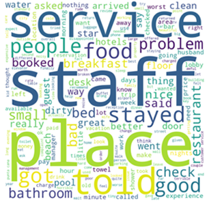
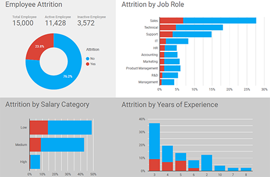

📊 Ads Sales Forecasting

Strategy and marketing are like bread and butter, and choosing the right channels and creating a strategy can be daunting. No one likes dry bread. By evaluating the effectiveness of ads on social media, networking sites such as Facebook, Instagram and Google to make sure the business knows which side of the bread is buttered.
☏ Telco Churn Prediction

Customer attrition can be much more expensive than customer retention and loyal customers are more profitable to companies by indirectly attracting more customers. Thus, it is important to identify customers with the highest propensity to churn, and offer incentives to persuade them to stay.
🙃 Sentiment Analysis
Text analysis allows companies to understand how customers feel about their brands and products, discover whether specific reviews or tweets are positive or negative, and which topics customers mention and why. Keeping an eye on feedbacks and sentiments allows companies to know their pain points, ways to improve and target new opportunities.
🥑 Avocado - EDA

If you're an avocado lover, you won’t want to miss this.
(Q1) Which year has the most expensive avocado?
(Q2) What type of avocado and its price?
(Q3) Which US city has the cheapest avocado?
💁 HR Attrition Dashboard
The amount of people who quit plays a critical role in business success. High turnover could be serious as people are an essential part of every business. By understanding what really drives it could reduce organization's costs by retaining key people.